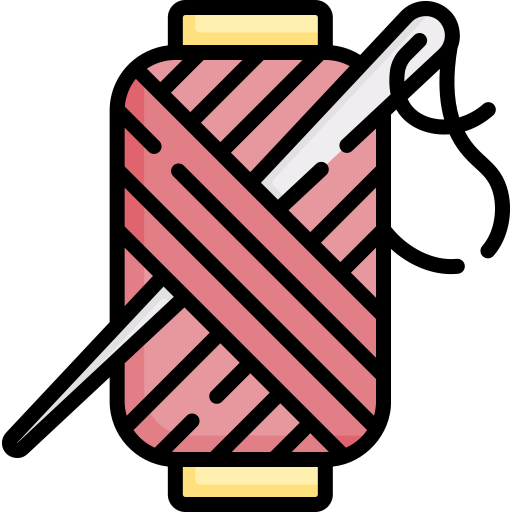
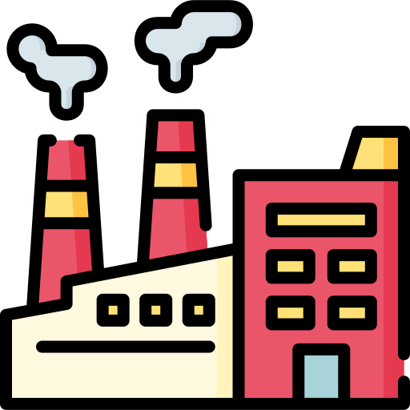
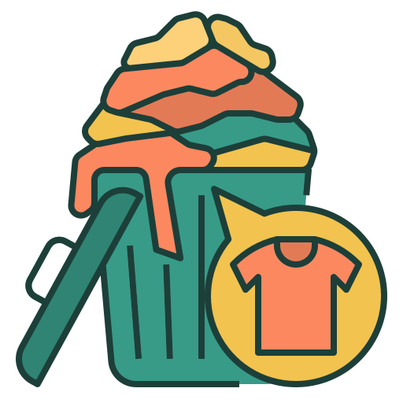
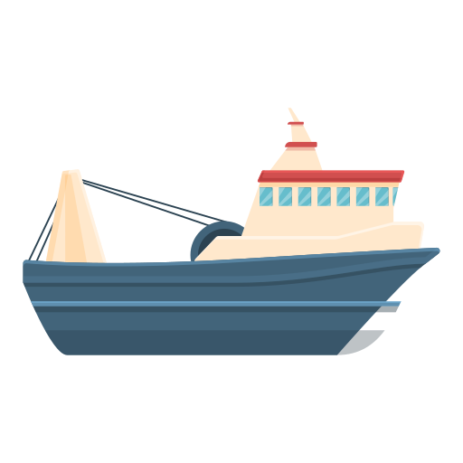
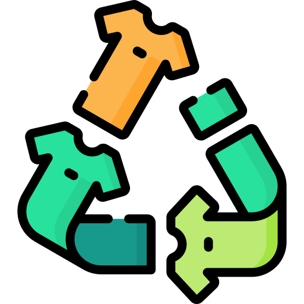

Moda consciente · Buenos Aires
Moda consciente · Buenos AiresSobre nosotras
Creamos este espacio para informar, reflexionar y repensar la forma en que consumimos moda.
Moda consciente · Buenos AiresCreamos este espacio para informar, reflexionar y repensar la forma en que consumimos moda.

Quiénes somosSomos un grupo de chicas de Buenos Aires que participamos en Chicas en Tecnología (CET), un programa que nos permitió acercarnos al desarrollo web y la programación.
A través de EcoTrama descubrimos cómo la tecnología puede ayudarnos a generar conciencia sobre el impacto de la moda.
Creemos que la tecnología también puede ser una herramienta para cuidar el planeta, y este sitio es nuestra forma de demostrarlo.

Aprendimos a programar y decidimos usar ese conocimiento para crear algo con impacto: un proyecto sobre moda y sustentabilidad.
🌍 El problema que nos movilizó

La Provincia de Buenos Aires genera unas 570 toneladas diarias de residuos textiles. La falta de infraestructura dificulta su recuperación y reciclaje.

En 2015, los residuos textiles representaban el 4,7% del total de residuos urbanos en la Ciudad de Buenos Aires. El reciclaje textil en los Puntos Verdes sigue siendo limitado.
Fuente: Puntos Verdes CABA

Diversos sectores de la industria textil argentina expresaron preocupación por el aumento de las importaciones de ropa usada y por el riesgo de que el país se convierta en un destino para prendas descartadas provenientes del exterior.
Fuente: CIAI / Pilar Adiario

En Argentina no existe actualmente una ley nacional de Responsabilidad Extendida del Productor para el sector textil. Las empresas no tienen la obligación legal de hacerse cargo de la recolección o reutilización de las prendas descartadas.
Fuente: La Nación
💚 ¿Qué proponemos?
Pequeñas acciones pueden
generar grandes cambios.
Creemos que otra forma de relacionarnos con la ropa es posible. Reutilizar, reparar e intercambiar son acciones simples que pueden generar un cambio real.

Dale una segunda vida a lo que ya no usás

Encontrá una modista cerca de casa

Cambiá lo que no te ponés por lo que sí querés

Compartí ideas en el foro comunitario